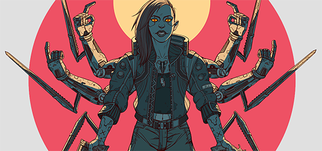
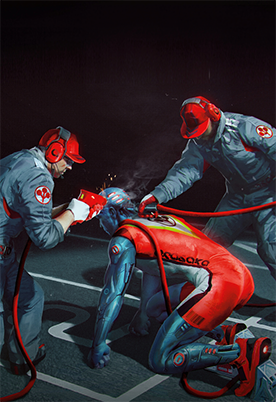
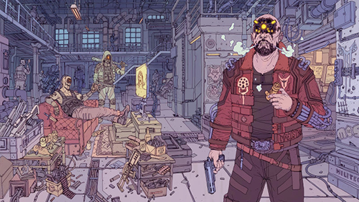

| 义体：进化或是毁灭？ |
“我们都认识这么一两个熟人，他们的邻居义体装得太狠，有一天带着枪出门朝人群开了火。或者这位邻居为了省钱不肯找靠谱的义体医生，于是每天噩梦缠身，用了荷尔蒙阻断药后出现幻听，终于发了疯。有些人说赛博精神病是种因为社会不平等造成的疾病。其他人说这是病态迷恋科技需要付出的代价。还有人觉得它完全就是瞎编的。直到他们看到自己的邻居在家门口乱开枪，不得不给暴恐机动队打电话的那天。” ——夜之城数据库 
“尽管最初的机电假体是出于实用和医疗目的而开发的，可现如今它们已经演变成了一种生活方式。2077年，义体早就和纹身、珠宝一样，成了司空见惯的日常风景。人们安装义体的理由不一而足。它可以是单纯的技术升级，或是增强战斗力，甚至是为了赶时髦。拥有一套风靡一时的义体，成了夜之城文化中必不可少的关键组成部分。所谓的稀缺，只不过是另一种形式的通货而已。要想飞黄腾达，你首先得像模像样。而品位，关乎着一切。” 以上新闻，来自于夜之城影响力最大的媒体——WNS新闻。抗排异反应治疗技术的发明与产生使义体走进了千家万户，迅速普及了赛博义体并产生了一种被称为“刻奇主义”的文化审美，和超梦的广泛兴盛。连年兵燹天灾，疲倦于绝望动乱中挣扎求存的人们渴望着派对、娱乐中的狂欢与放纵，即使明知那只是短暂的虚妄。超梦成为最普及的娱乐方式，超梦产业也因此兴盛。而超梦明星的带头作用、和铺天盖地的广告宣传也进一步加剧了赛博改造的普及。赛博义体的时代随之来临。

出人意料的是，伴随赛博义体的普及，一种名为赛博精神病的不治之症开始出现。根据创伤小组病历的定义，赛博精神病是由植入体内的硬件和包括软件在内的各种行为模块引发的所有与焦虑相关的精神和人格障碍的统称。 患者大多经过大量的赛博化改造，病症表现为蔑视生命，认为肉体低等且脆弱，失去同理心的他们经常会无缘无故虐杀人类或其他动物。在21世纪早期的夜之城中，由赛博精神病所导致的谋杀案件不断增加，而一般的NCPD（夜之城警局）并不具备抓捕赛博精神病的能力。 为了应对这一情况，同样高度赛博化的特警队伍，暴恐机动队孕育而生（事实上，暴恐机动队成员都是被改造成功的赛博精神病）。赛博精神病的出现并没有阻止公众赛博化改造的步伐。一方面当然是出于对混乱局势无可奈何的需求，但谁也不愿承认的另一面是，就好像吸烟可能会导致癌症我们依然会吸烟一样，即便安装赛博义体可能会让自己成为赛博精神病，但超越人类的能力是如此让人欲罢不能，这份优越感使人上瘾，每个人都希望能不断的通过义体改造获得更强大的能力。 义体的推广和刻奇主义的盛行，到底意味着人类的进化还是毁灭，恐怕只有夜之城的居民可以回答这个问题了。  |
|